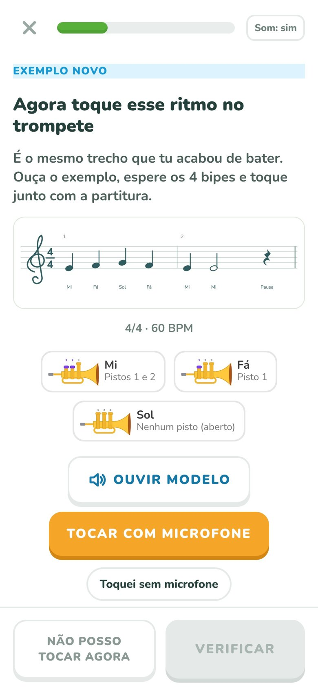
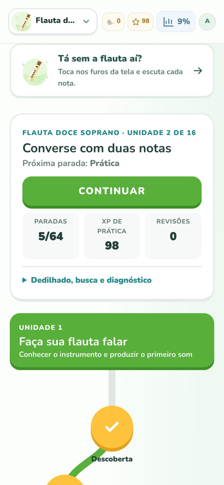
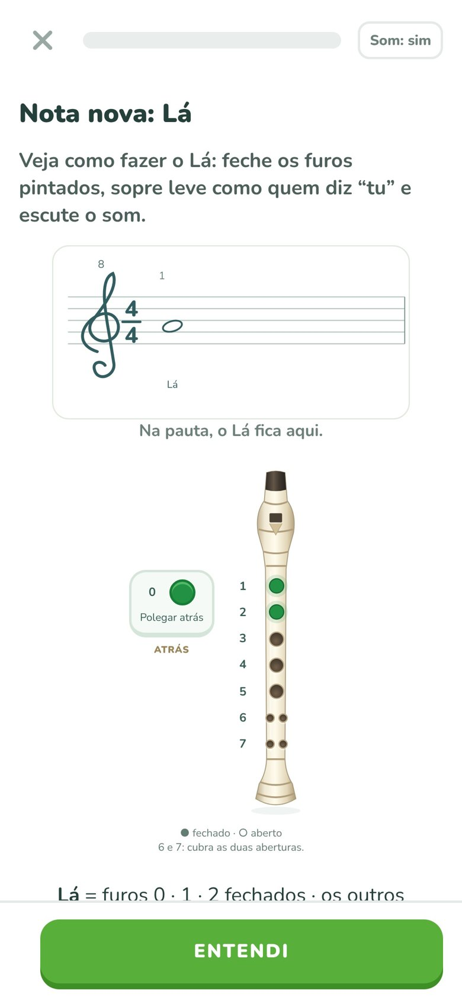
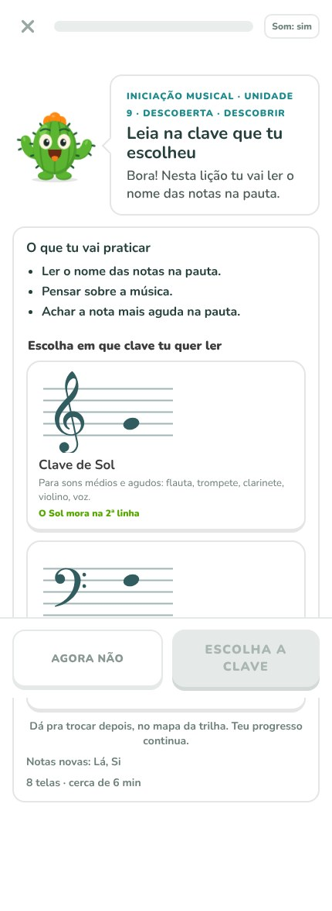
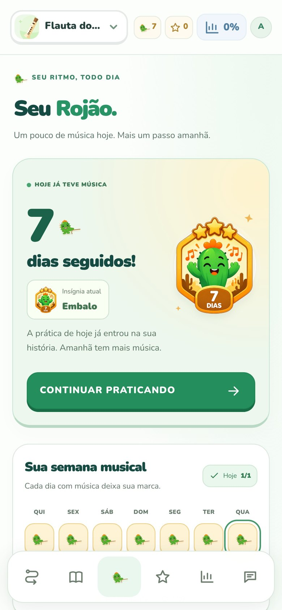
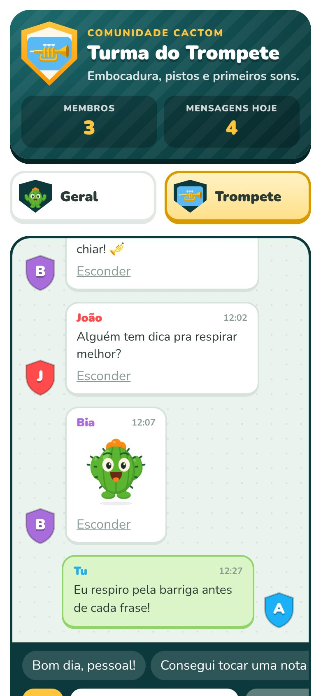

O jeito divertido e gratuito de aprender música.
Lições curtas, o Tom de guia e um app que escuta teu instrumento e diz o que saiu certo. Tudo no celular, sem instalar nada.
Feito no sertão do Ceará, pra criança de todo canto.
Gratuito. Divertido. Musical.
Aprenda tocando de verdade
O Cactom ouve a flauta, o trompete ou o clarinete pelo microfone e confere a nota e o ritmo na hora. Acertou, comemora; errou, a atividade volta mais tarde pra treinar de novo.
- Nota, afinação e ritmo conferidos pelo microfone
- O som é analisado no aparelho e não é gravado



Lições curtas
Um pouquinho por dia, do primeiro som à primeira música
Cada curso é uma trilha de 16 unidades. Em cada unidade a criança descobre, pratica, cria e cumpre uma missão, sempre com uma tela de cada vez.
- Lições de poucos minutos
- Revisão nos dias seguintes do que ficou difícil
- Desafio a cada quatro unidades
Sem instrumento? Sem problema
Comece hoje com a Iniciação musical
Pulso, notas, figuras e a força do som, tudo tocando na tela: ouvindo, batendo o ritmo no botão e montando compassos. Lá pela metade, a criança escolhe ler na clave de Sol ou na de Fá.
- Funciona só com o celular
- Prepara pra qualquer instrumento


Motivação que não acaba
Acende o Rojão e não deixa apagar
Cada dia de prática acende o Rojão. Tem pontos de experiência, conquistas e ranking por instrumento, pra criança querer voltar amanhã.
- Dias seguidos de prática
- Conquistas a cada descoberta
- Ranking da turma do instrumento
Partituras
A partitura do professor vira aula
Coloque um PDF de partitura e o Cactom lê as notas, monta a pauta interativa e acompanha a criança tocando, compasso por compasso.
- Aceita PDF digital ou escaneado
- Treino da música inteira ou por compasso
Como funciona
Em dois minutos, a primeira lição
Crie o perfil
Só o primeiro nome da criança. Dá pra ter vários perfis no mesmo aparelho.
Escolha o curso
Iniciação musical, flauta doce, trompete ou clarinete.
Toque e comemore
Uma lição por dia já faz diferença. O Tom acompanha cada passo.
Segurança em primeiro lugar
Feito pra criança, do jeito que a família espera
O Cactom segue a LGPD e o ECA Digital: dados mínimos, nada de propaganda e a família no controle.
Nenhuma propaganda e nenhum dado usado pra vender nada.
O chat da turma só abre com a autorização de um responsável.
Telefone, endereço, rede social e palavrão são bloqueados.
O microfone só escuta pra corrigir. Nada é gravado nem enviado.
Comunidade
Uma turma que toca junto
Na Comunidade a criança conversa com quem estuda o mesmo instrumento, manda figurinha do Tom e vê o XP de cada um. Só duas salas, a Geral e a da turma, com moderação.

Cactom para escolas, bandas e projetos
Leve o Cactom para a sua turma. Com o programa Escola Parceira, o professor acompanha quem praticou, onde cada aluno trava, manda lição e tira relatórios para a coordenação.
- Código da escola para os alunos entrarem na turma
- Painel do professor com o progresso de cada aluno
- Partituras próprias da escola ou da banda


Nossa história
Nasceu numa escola de música do interior
O Cactom começou na Escola de Música de Madalena (CE), como um laboratório para os alunos praticarem entre uma aula e outra. Virou um app com o Tom, um cacto nordestino que ensina, comemora e não desiste de ninguém.
Idealizado por Siqueira Neto, músico, estudante de Inteligência Artificial e um dos responsáveis pela escola.

Bora fazer o sertão tocar?
Começar agoraEscola ou projeto querendo ser parceiro? Fale com a gente: [contato do Cactom]